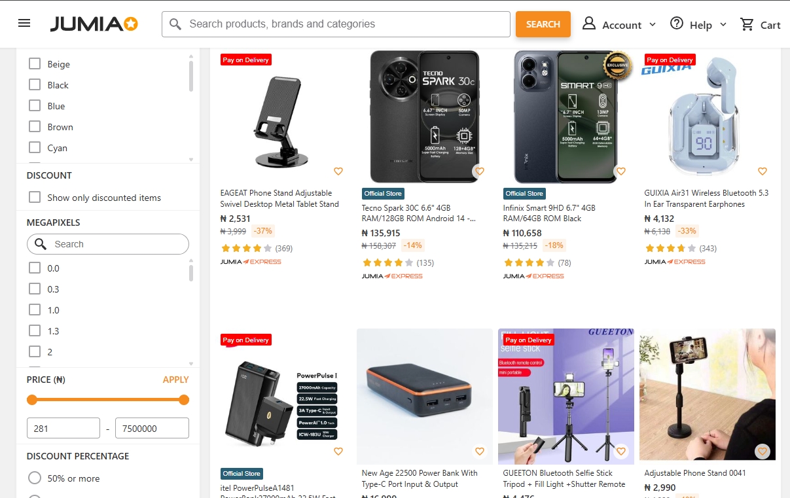

This project explores global development trends using World Development Index (WDI) data, with a focus on economic growth, health, population changes, and energy use. By applying data analytics, we aim to uncover patterns, regional differences, and key factors that shape development across various countries.
Lagos, Nigeria, is a rapidly growing city with a dynamic real estate market. However, housing prices vary significantly based on multiple factors, including location and property features. This project aims to clean, analyze, and build predictive models for house prices in Lagos to provide insights and data-driven pricing estimates.
This project focuses on web scraping product data from 100 pages of Jumia, a leading e-commerce platform. The goal is to extract, clean, and analyze data on computing devices, phones, and accessories to gain insights into pricing, discounts, ratings, and consumer trends.

This project is to analyzes customer complaints data to identify trends and common issues. This will help the business improve customer service, address frequent concerns, and enhance overall customer satisfaction.

This project seeks to deliver insights into the sales performance of an e-commerce company over the past year. Through an in-depth analysis of sales data, I aim to uncover trends and gain a comprehensive understanding of the company's performance within the Nigerian market. Using Microsoft Excel, I analyzed key insights from a raw dataset, including KPIs, discounts, feedback, locations, payment methods, and quarterly data. To complete the project, I presented the findings and recommendations in an interactive report using Microsoft Power BI.
This project examines gender disparities in politics within Nigeria's South-South region by analyzing data on political offices, including Local Government Chairmen, Commissioners, House of Representatives Members, and Senators. It also explores the relationship between economics, education, and gender disparities by incorporating GDP, literacy rates, and education budgets as a percentage of GDP.
A detailed vulnerability analysis for a shipping company using Microsoft Excel, focusing on identifying patterns and potential risks. Evaluated how factors such as location, system components, and interaction types influenced key metrics like downtime and operational duration. Additionally, leveraged Microsoft Power BI to create dynamic visualizations and actionable insights, presenting recommendations to mitigate risks and optimize performance.